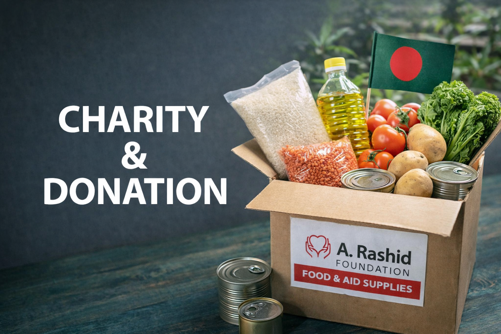
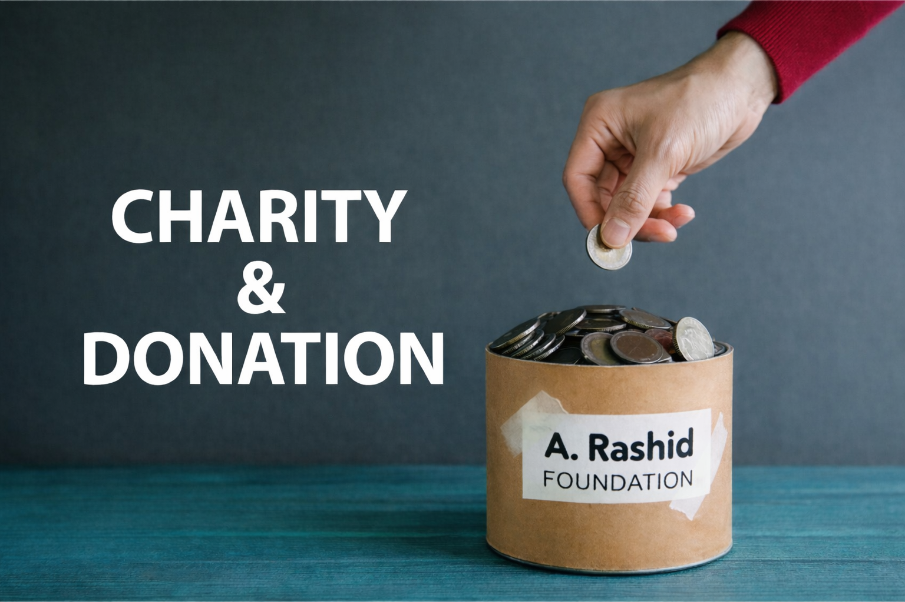
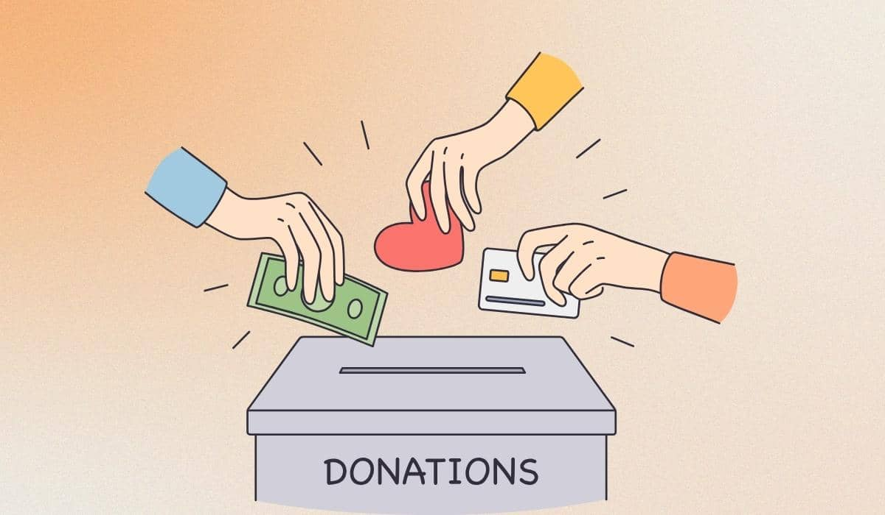

<!DOCTYPE html>
<html lang="en">
<head>
  <meta charset="UTF-8" />
  <meta name="viewport" content="width=device-width, initial-scale=1.0" />
  <title>A. Rashid Foundation | Charity & Volunteering</title>

  <link rel="stylesheet" href="style.css" />
  <link href="https://fonts.googleapis.com/css2?family=Inter:wght@400;600;700&display=swap" rel="stylesheet">
</head>
  
<body>

  <!-- ALL your website content goes here -->
  <!-- navbar, hero, sections, footer, etc -->

  <!-- ✅ SCRIPT MUST BE HERE -->
  <script src="script.js"></script>
</body>
</html>

  <!-- Navigation -->
  <header class="navbar">
  <div class="container nav-content">

    <div class="nav-top">
      <h1 class="logo">
  
  A. Rashid Foundation
</h1>
      <button class="menu-toggle" onclick="toggleMenu()">☰</button>
    </div>

    <nav id="mobileMenu">
      <ul class="nav-links">
        <li><a href="#home">Home</a></li>
        <li><a href="#about">About</a></li>
        <li><a href="#programs">Programs</a></li>
        <li><a href="#volunteer">Volunteer</a></li>
        <li><a href="#donate">Donate</a></li>
        <li><a href="#contact">Contact</a></li>
      </ul>

      <!-- ONLY ONE search + language block -->
      <div class="nav-tools">
        <input type="text" id="searchInput" placeholder="Search" />
        <button onclick="searchSite()">🔍</button>

        <select id="languageSelect" onchange="switchLanguage()">
          <option value="en">English</option>
          <option value="bn">বাংলা</option>
        </select>
      </div>
    </nav>

  </div>
</header>

  <section class="impact">
  <div class="container impact-grid">
    <div class="impact-card">
      <h3>0+</h3>
      <p>People Helped</p>
    </div>
    <div class="impact-card">
      <h3>Founding Team</h3>
      <p>Volunteers</p>
    </div>
    <div class="impact-card">
      <h3>$0</h3>
      <p>Donations Raised</p>
    </div>
  </div>
</section>

  <!-- Hero -->
  <section id="home" class="hero hero-image">
    <div class="container hero-content">
      <h2>Helping Communities. Saving Lives.</h2>
      <p>
        A. Rashid Foundation is committed to humanitarian aid, disaster relief,
        and empowering communities through volunteering and support.
      </p>
      <div class="hero-buttons">
        <a href="#donate" class="btn-primary">Donate Now</a>
        <a href="#volunteer" class="btn-secondary">Become a Volunteer</a>
      </div>
    </div>
  </section>

  <section id="about" class="about">
  <div class="container">
    <h2 class="section-title">About A. Rashid Foundation</h2>

    <p>
      A. Rashid Foundation is a community-driven charitable initiative based in
      Bangladesh, established with the purpose of supporting vulnerable
      individuals and families during times of need.
    </p>

    <p>
      Our focus is on humanitarian assistance, community support, and volunteer
      engagement. As a growing foundation, we are committed to transparency,
      ethical action, and building long-term impact through responsible
      initiatives.
    </p>

    <p>
      We believe that meaningful change begins with compassion, collaboration,
      and a strong sense of responsibility toward society.
    </p>
  </div>
</section>

 <!-- Programs -->
<section id="programs" class="programs">
  <div class="container">
    <h2 class="section-title">Our Programs</h2>

    <div class="programs-grid">

      <div class="program-card">
        
        <h3>Disaster Relief</h3>
        <p>
          Emergency food, shelter, and essential aid for communities affected
          by floods, cyclones, and natural disasters in Bangladesh.
        </p>
      </div>

      <div class="program-card">
        
        <h3>Community Support</h3>
        <p>
          Supporting low-income families through food distribution,
          community care, and volunteer-led initiatives.
        </p>
      </div>

      <div class="program-card">
  
  <h3>Health & Essentials</h3>
  <p>
    Providing hygiene supplies, basic healthcare items, and awareness
    programs to improve community well-being.
  </p>
</div>

      <div class="program-card">
        
        <h3>Community Development</h3>
        <p>
          Long-term initiatives focused on education, food security,
          and empowering families to build a better future.
        </p>
      </div>

    </div>
  </div>
</section>

  <!-- Volunteer -->
  <section id="volunteer" class="volunteer">
  <div class="container">
    <h2 class="section-title">Become a Volunteer</h2>

    <p class="volunteer-intro">
      Volunteers are the heart of A. Rashid Foundation. If you are passionate
      about helping others and supporting community initiatives, we welcome
      you to join us as we grow.
    </p>

    <p class="volunteer-intro">
      At this early stage, we are building a volunteer network and will reach
      out as opportunities become available.
    </p>

    <form class="volunteer-form" id="volunteerForm">
      <input type="text" placeholder="Full Name" required />
      <input type="email" placeholder="Email Address" required />
      <input type="text" placeholder="City / Area" required />
      <textarea
        placeholder="How would you like to help? (optional)"
        rows="4"
      ></textarea>

      <button type="submit" class="btn-secondary">
        Submit Volunteer Request
      </button>
    </form>

    <p id="formMessage" class="form-message"></p>
  </div>
</section>

  <section id="donate" class="donate">
  <div class="container">
    <h2 class="section-title" data-key="donateTitle">Donate via bKash</h2>

    <p class="donate-intro" data-key="donateIntro">
      Mobile banking is the easiest way to support our mission in Bangladesh.
      Please follow the steps below to donate using bKash.
    </p>

    <div class="bkash-box">
      <div class="bkash-info">
        <p><strong>bKash Number:</strong> <span id="bkashNumber">01XXXXXXXXX</span></p>
        <p><strong>Account Type:</strong> Personal</p>
      </div>

      <ol class="donate-steps">
        <li>Send money to the bKash number above</li>
        <li>Fill out the donation form below</li>
        <li>We will confirm your donation</li>
      </ol>

      <form class="donate-form">
        <input type="text" placeholder="Your Full Name" required />
        <input type="tel" placeholder="Your bKash Number" required />
        <input type="number" placeholder="Donation Amount (BDT)" required />

        <textarea
          placeholder="Donation purpose / note (e.g. food aid, emergency help)"
          rows="4"
          required
        ></textarea>

        <button type="submit" class="btn-primary">
          Submit Donation Details
        </button>
      </form>
    </div>
  </div>
</section>

  <section id="transparency" class="transparency">
  <div class="container">
    <h2 class="section-title">Transparency & Accountability</h2>

    <p class="transparency-intro">
      A. Rashid Foundation is committed to transparency, ethical practices, and
      responsible use of all donations. We believe trust is the foundation of
      meaningful impact.
    </p>

    <div class="transparency-points">
      <div class="transparency-item">
        <h4>Use of Donations</h4>
        <p>
          All donations are directed toward humanitarian assistance, community
          support, and emergency relief initiatives aligned with our mission.
        </p>
      </div>

      <div class="transparency-item">
        <h4>Financial Responsibility</h4>
        <p>
          As a growing organization, we maintain clear records of donations
          received and expenses incurred. Financial transparency will be
          improved and shared publicly as operations expand.
        </p>
      </div>

      <div class="transparency-item">
        <h4>Updates & Reporting</h4>
        <p>
          We are committed to sharing updates, activities, and impact reports
          through our website and communication channels as our initiatives
          progress.
        </p>
      </div>

      <div class="transparency-item">
        <h4>Ethical Commitment</h4>
        <p>
          We do not engage in misleading claims or false reporting. Every step
          taken by A. Rashid Foundation is guided by integrity and respect for
          the communities we serve.
        </p>
      </div>
    </div>
  </div>
</section>

 <section id="contact" class="contact">
  <div class="container">
    <h2 class="section-title">Contact Us</h2>

    <p class="contact-intro">
      Have questions, want to volunteer, or wish to support our mission?
      Reach out to us — we’d love to hear from you.
    </p>

    <div class="contact-grid">
      <!-- Contact Info -->
      <div class="contact-info">
        <p><strong>Email:</strong> contact@arashidfoundation.org</p>
        <p><strong>Location:</strong> Chandpur, Chittagong, Bangladesh</p>
      </div>

      <!-- Contact Form -->
      <form class="contact-form">
        <input type="text" placeholder="Your Name" required />
        <input type="email" placeholder="Your Email" required />
        <textarea placeholder="Your Message" rows="5" required></textarea>
        <button type="submit" class="btn-primary">Send Message</button>
      </form>
    </div>
  </div>
</section>
 
  <!-- Footer -->
  <footer class="footer">
  <div class="container footer-content">
    <p class="footer-text">
      © 2026 A. Rashid Foundation. All rights reserved.
    </p>

    <div class="footer-links">
      <a href="#" aria-label="Facebook">Facebook</a>
      <a href="#" aria-label="Twitter">Twitter</a>
      <a href="#" aria-label="LinkedIn">LinkedIn</a>
    </div>
  </div>
</footer>

  <script src="script.js"></script>
</body>
</html>


